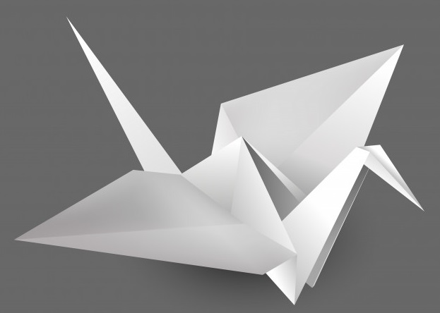
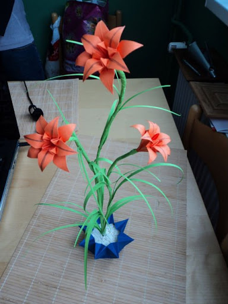

Para los occidentales nos resulta llamativo e ingeniso el arte de crear con papel todo tipo de figuras con determinadors dobleces.
Es una aficon que se ha convertido en una pasin para muchos, por las bellas formas que se logran. lleva siglos de existencia y por ello, tiene una historioa muy rica, formando parte esencial de algunas costumbres japonesas.
La capital aragonesa tendra la primera Escuela-Musea de Origami de Europa el proximo año, cuando abra el espacio que se ha habilitado en los bajos del mercado de san vicente de paúl, en el Casco Historico.
Tras la firma del acuerdo, el consejero municipal de Cultura, Educacion y Medio Ambiente, ha explicaso que este convenio supone el "arranque del futuro centro de formacion y museo destinado a la papiroflexia".
Su localizacion en los bajos del Mercado de San Vcente de Paúl, es una ubicacion que le permitira estar en el circuido cultural de la ciudad, proximo a otros centros culturales.
La asociacion Origami de Zaragoza tiene un gran fondo que ya mostró el pasado año con una exposicion a la que asistieron mas de 40.000 personas en el centro de Historia y sus socios estan convencidos de que esta futura Escula-Museo sera una novedad, porque no habra otro en europa y suscitará un enorme interés.
El Origami o Papiroflexia, como se la llama en los paises de habla hispana, e sun arte que se basa en la tecnica del plegado de papel, para objener figuras y formas decorativas.
El termino origami proviene de las palabras japonesas "ori" plegado y "gami" papel.
El origami en su origen tuvo en japon un sentido religioso. Mas tarde se desarrolo como un pasatiempo y posteriormente, como recurso pedagogico y terapeutico, atrayendo la atencion de matematicos y cientificos.
Aunque en s¡esencia el Origami puede parecer y de hecho es una tecnica sencilla, el grado de complejidad que ha alcanzadoen el transcurso del tiempo, hace que algunas de sus creaciones requieran dias e trabajo.
En el Origami no se utilizan tijeras, pegamento ni grapas, tan solo el papel y las manos. Aun así, con sólo algunas hojas de papel pueden obtenerse distintas formas geometricas y figuras parecidad a la realidad (animales, personas, flores, objetos, etc).
Ell Origami so sólo representa figuras inmóviles, también existen objetos móviles donde las figuras pueden moverse de manera ingeniosas.